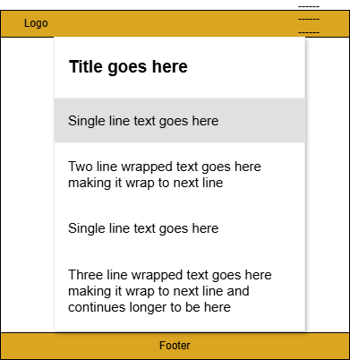
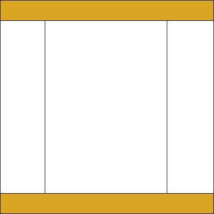

Site Name
Name: Nigeria Heritage Hub
Reason: This name represents a platform dedicated to showcasing the rich and diverse cultural heritage of Nigeria.
Optional domain availability: nigeria-heritage.org
Site Purpose
The site serves as a central hub for exploring Nigeria's heritage by providing information on historical sites, cultural events, traditional arts, and heritage conservation efforts.
Scenarios
- What are the must-visit historical sites in Nigeria?
- Where can I find information about upcoming cultural festivals?
Color Schema
- Primary Color: #DAA520 (Used for headings and accents)
- Secondary Color: #008000 (Used for backgrounds and paragraphs)
Typography
- Heading Font: Arial (Used for all headings)
- Body Font: Georgia (Used for all body text)
Wireframe
Provide a sketch for the mobile view and for a larger, such as desktop, view for the home page.
 